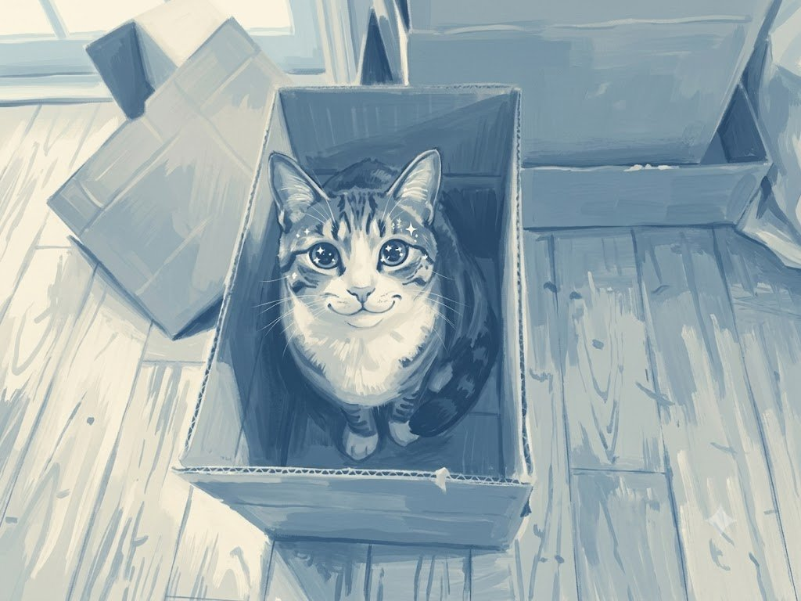

APPENDIX B
프롬프트 사전

작업 중에 바로 찾아 쓸 수 있도록 프롬프트 어휘를 분류해 모았다. 그대로 베끼기보다, 자기 작업에 맞게 조합하고 자기 목록을 늘려 가는 출발점으로 쓰기 바란다. 4장 실습 4-6에서 시작한 자기 어휘 목록에 여기서 새로 알게 된 것을 옮겨 적어 두면 오래 남는다.
이미지: 매체와 화풍
회화·드로잉
watercolor 수채. 번짐과 여백, 서정적
soft bleeding edges 번짐이 부드럽게
visible paper texture 종이 결이 보이게
gouache 과슈. 불투명하고 진함
oil painting 유화. 두꺼운 붓자국
thick impasto brushstrokes 물감이 두툼하게
visible canvas weave 캔버스 결
pencil sketch 연필. 선 중심
loose gestural lines 빠르고 자유로운 선
cross-hatching 해칭 명암
charcoal drawing 목탄. 거친 명암
ink wash painting 수묵. 먹의 농담
pastel 파스텔. 부드러운 색면판화·인쇄
woodblock print 목판화. 단순한 면, 굵은 윤곽
linocut 리놀륨판화. 목판보다 매끈
screen print 실크스크린. 평면적 색면
risograph print 리소. 어긋난 색, 거친 점 질감
halftone dots 망점. 인쇄물 질감
offset print texture 오프셋 인쇄 느낌디지털·3D
flat vector illustration 벡터. 면과 선이 깨끗
limited palette 색을 적게
bold uniform outlines 굵고 균일한 윤곽선
isometric illustration 아이소메트릭. 등각 투영
3d render 3D 렌더
clay render 점토 질감, 무광
glossy plastic 광택 플라스틱
subsurface scattering 반투명 재질
pixel art 픽셀아트
8-bit / 16-bit 해상도 감각
low poly 로우폴리. 각진 면사진
photography 사진
documentary photography 다큐. 자연스러운 순간
editorial photography 화보. 연출된 구성
product photography 제품 사진
film photography 필름 사진
35mm film grain 필름 입자
expired film colors 바랜 색
polaroid 폴라로이드시대·사조
art nouveau 아르누보. 곡선, 식물 문양
bauhaus 바우하우스. 기하학, 원색
mid-century modern 1950~60년대. 절제된 색
ukiyo-e 우키요에. 평면 색면, 굵은 선
constructivist poster 구성주의. 대각선, 강한 대비
swiss graphic design 스위스 디자인. 격자, 산세리프
y2k aesthetic 2000년대 초. 금속, 형광
vaporwave 베이퍼웨이브. 파스텔, 복고주의
5.3절에서 다뤘듯 활동 중인 작가의 이름은 넣지 않는다. 사조 이름은 누구의 것도 아니므로 안전하며, 결과의 통제력도 오히려 높다.
이미지: 구도와 시점
샷 크기
extreme wide shot 아주 넓게. 고립감, 규모
wide shot / full shot 전신과 배경. 상황 설명
medium shot 상반신. 대화, 관계
close-up 얼굴. 감정
extreme close-up 눈, 손, 부분. 긴장앵글
eye level 눈높이. 중립
low angle 앙각. 크고 위압적
high angle 부감. 작고 취약
bird's eye view 새의 시점. 전체 배치
worm's eye view 아주 낮은 시점
dutch angle 기울어진 화면. 불안
over-the-shoulder 어깨 너머. 관찰자 시선렌즈와 심도
wide angle lens, 24mm 광각. 공간이 넓고 원근 과장
50mm lens 표준
85mm portrait lens 인물용. 배경 압축
telephoto, 200mm 망원. 원근 압축
macro lens 접사
shallow depth of field 얕은 심도. 배경 흐림
deep focus 전체 선명
bokeh 흐려진 빛망울
tilt-shift 미니어처처럼구도
rule of thirds 삼분할. 안정적
centered composition 중앙 배치. 정면성
symmetrical 대칭. 정돈됨
leading lines 유도선. 시선 집중
framing 액자 구도
negative space 여백 ← 포스터에 필수
low horizon 낮은 지평선. 하늘이 넓게
diagonal composition 대각선. 역동적이미지: 조명과 색
조명
soft natural light 부드러운 자연광
window light 창가 빛
golden hour 해질녘. 따뜻함
blue hour, twilight 푸른 새벽·저녁. 고요함
backlit, silhouette 역광. 극적
rim light 윤곽이 빛남
side lighting 측광. 입체감
harsh direct sunlight 강한 직사광. 선명한 그림자
overcast, diffused 흐린 날. 그림자 없음
neon lighting 네온. 도시의 밤
candlelight 촛불. 친밀함
volumetric light rays 빛줄기가 보이는색
muted palette 채도 낮은
limited palette of three colors 색 세 개만
monochromatic 단색조
warm tones / cool tones 따뜻한 / 차가운
high contrast 대비 강함
pastel colors 파스텔
earth tones 흙빛
desaturated shadows 그림자의 채도를 낮춤
color grading like film 영화 같은 색보정이미지: 품질과 마감
질감·마감
sharp focus 선명하게
soft focus 부드럽게
film grain 필름 입자
matte finish 무광
detailed texture 질감이 살아 있게
clean lines 깔끔한 선
sketchy, unfinished 스케치처럼, 미완성 느낌주의
masterpiece, best quality, 8k, award winning 같은 막연한 품질 어휘는 남발하지 않는다. 요즘 모델에서는 효과가 거의 없고, 오히려 색이 과하게 진해지거나 결과가 획일적으로 변한다.
이미지: 네거티브 프롬프트
자주 쓰는 제외 항목
[화질]
blurry, low quality, jpeg artifacts, pixelated
[불필요한 요소]
watermark, signature, text, letters, logo, frame, border
[인체]
extra fingers, deformed hands, extra limbs,
distorted face, disproportionate body
[색·조명]
oversaturated, harsh lighting, blown highlights요점
네거티브 항목을 잔뜩 넣으면 결과가 밋밋해진다. 실제로 문제가 반복될 때만 그 항목을 추가하는 방식을 권한다.
글: 역할과 형식 지시
역할 부여
너는 [직업]이야. [무엇을 중요하게 보는 사람]이다.
너는 [대상]을 상대로 [무엇]을 하는 사람이야.
[분야]에서 [연차]년 일한 사람의 관점으로 봐 줘.출력 형식
표로 정리해 줘. 열은 [A | B | C].
번호 매긴 목록으로, 각 항목은 한 문장.
___자 이내로.
제목 없이 본문만.
마크다운 없이 평문으로.
각 항목마다 근거를 한 줄씩 덧붙여 줘.진행 통제
단계별로 진행하고, 각 단계가 끝나면 멈춰서 내 확인을 받아.
지금은 ___단계만 해 줘.
먼저 질문 ___개를 던져 줘. 답은 내가 할게.
안을 3개 제시해 줘. 고르는 건 내가 할게.글: 창작 확장 지시
벌리기
___개 제시해 줘. 서로 최대한 다르게.
뻔한 것부터 이상한 것까지 골고루 섞어 줘.
더 이상한 것으로.
전제를 정반대로 뒤집어서.
한 가지 조건만 바꿔서.
___의 시점으로 다시 써 줘.
규모를 아주 작게. 한 사람의 하루 안에서.
결말을 먼저 정하고 거꾸로 짜 줘.설정 캐내기
이 설정으로 이야기를 쓰려면 반드시 정해야 하는데
아직 정해지지 않은 것들을 질문 ___개로 뽑아 줘.
답은 하지 말고 질문만 줘.글: 퇴고와 비평 지시
항목 지정 비평
다음만 지적해 줘. 고쳐 주지는 마.
1. 감정을 직접 이름 붙여 말한 문장
2. 없어도 뜻이 통하는 부사
3. 독자가 이미 알아챘을 것을 다시 설명한 문장
4. 흔하게 쓰이는 비유나 표현
5. 없어도 되는 문단제한된 수정
아래 세 가지만 고쳐 줘. 나머지는 그대로 둬.
내가 요청하지 않은 부분은 건드리지 마.
길이를 늘리지 말고 줄이는 방향으로만 고쳐 줘.반론 요청
이 주장에서 가장 약한 부분을 지적하고,
반대편에서 제기할 가장 강력한 반론을 하나 제시해 줘.
동의하거나 격려하지 말고 비판만 해 줘.음악
장르·분위기
lo-fi hip hop, indie folk, city pop, ambient,
orchestral, synthwave, bossa nova, post-rock
melancholic, warm, tense, playful, nostalgic,
hopeful, eerie, contemplative편성·질감
acoustic guitar, fingerpicked
soft piano, felt piano
upright bass, brushed drums
sustained pads, analog synth
strings, solo cello
no percussion / no vocals / instrumental
1970s analog warmth, tape hiss
modern clean production
lo-fi, reverb-heavy, dry and close용도별 상용구
[영상 배경음악]
minimal, unobtrusive, leaves space for narration,
consistent throughout with no dramatic changes
[루프]
seamless loop, 8 bars, consistent energy
[시그널]
4-second sound logo, ends cleanly with no fade영상
카메라 움직임
static shot 움직이지 않음
slow zoom in / out 천천히 확대·축소
pan left / right 좌우로 훑기
tilt up / down 위아래로 훑기
dolly in 앞으로 이동
orbit around the subject 대상 주위를 돌기
handheld, subtle shake 손으로 든 듯한 흔들림피사체 움직임
gentle wind through the leaves
steam rising from the cup
rain falling, water rippling
fabric fluttering
the person slowly turns their head
candle flame flickering통제 문구
everything else remains still 지시 외에는 정지
subtle and calm motion 움직임을 작게
consistent lighting throughout 조명 유지바로 쓰는 템플릿
캐릭터 묘사 덩어리 (7.5절)
채워 쓰는 틀
a [나이]-year-old [성별·국적], [머리 모양],
[안경·모자 등 얼굴 장식], [얼굴의 표식],
[늘 입는 옷과 그 특징], [액세서리],
[자세], [기본 표정]컷 프롬프트 조립 (9.3절)
조립 순서
[캐릭터 묘사 덩어리] + [이 컷의 장면·동작] +
[샷 크기·앵글] + [조명] + [스타일 고정 문구]이미지 프롬프트 다섯 축 (4.2절)
점검용 틀
[주제: 무엇이 있는가],
[세부: 재질·색·상태],
[스타일: 매체·화풍],
[구성: 구도·시점·조명],
[제약: 비율·제외할 것]시나리오 작성 요청 (8.3절)
구조를 고정한 요청
아래 구조로 [N]컷을 만들 거야. 구조는 내가 정했으니 바꾸지 말고
비어 있는 칸만 채워 줘. 칸마다 안을 3개씩 제시해 줘.
1컷 (훅) : [내가 정함]
2-3컷 : [비어 있음]
...
N-2컷 (반전): [내가 정함]
...
설정은 첨부 문서를 따라 줘.작업물 점검 요청 (12.4절)
점검 위임
첨부한 점검 목록의 각 항목에 대해 내 작업물이 통과하는지
하나씩 확인해 줘. 항목마다 통과/미통과/확인 불가로 판정하고
근거를 써 줘. 네가 확인할 수 없는 항목은 '확인 불가'로 표시하고
내가 해야 할 일을 알려 줘.